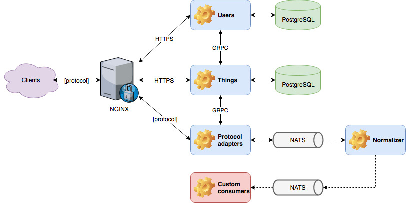

Architecture#
Components#
Magistrala IoT platform is comprised of the following services:
| Service | Description |
|---|---|
| users | Manages platform's users and auth concerns in regards to users and groups |
| things | Manages platform's things, channels and auth concerns in regards to things and channels |
| http-adapter | Provides an HTTP interface for sending messages via HTTP |
| mqtt-adapter | Provides an MQTT and MQTT over WS interface for sending and receiving messages via MQTT |
| ws-adapter | Provides a WebSocket interface for sending and receiving messages via WS |
| coap-adapter | Provides a CoAP interface for sending and receiving messages via CoAP |
| opcua-adapter | Provides an OPC-UA interface for sending and receiving messages via OPC-UA |
| lora-adapter | Provides a LoRa Server forwarder for sending and receiving messages via LoRa |
| magistrala-cli | Command line interface |

Domain Model#
The platform is built around 2 main entities: users and things.
User represents the real (human) user of the system. Users are represented via their email address used as their identity, and password used as their secret, which they use as platform access credentials in order to obtain an access token. Once logged into the system, a user can manage their resources (i.e. groups, things and channels) in CRUD fashion and define access control policies by connecting them.
Group represents a logical groupping of users. It is used to simplify access control management by allowing users to be grouped together. When assigning a user to a group, we create a policy that defines what that user can do with the resources of the group. This way, a user can be assigned to multiple groups, and each group can have multiple users assigned to it. Users in one group have access to other users in the same group as long as they have the required policy. A group can also be assigned to another group, thus creating a group hierarchy. When assigning a user to a group we create a policy that defines what that user can do with the group and other users in the group.
Thing represents devices (or applications) connected to Magistrala that uses the platform for message exchange with other "things".
Channel represents a communication channel. It serves as a message topic that can be consumed by all of the things connected to it. It also servers as grouping mechanism for things. A thing can be connected to multiple channels, and a channel can have multiple things connected to it. A user can be connected to a channel as well, thus allowing them to have an access to the messages published to that channel and also things connected to that channel with the required policy. A channel can also be assigned to another channel, thus creating a channel hierarchy. Both things and users can be assigned to a channel. When assigning a thing to a channel, we create a policy that defines what that thing can do to the channel, for example reading or writing messages to it. When assigning a user to a channel, we create a policy that defines what that user can do with the channel and things connected to it, hereby enabling the sharing of things between users.
Messaging#
Magistrala uses NATS as its default messaging backbone, due to its lightweight and performant nature. You can treat its subjects as physical representation of Magistrala channels, where subject name is constructed using channel unique identifier. Magistrala also provides the ability to change your default message broker to RabbitMQ, VerneMQ or Kafka.
In general, there is no constrained put on content that is being exchanged through channels. However, in order to be post-processed and normalized, messages should be formatted using SenML.
Edge#
Magistrala platform can be run on the edge as well. Deploying Magistrala on a gateway makes it able to collect, store and analyze data, organize and authenticate devices. To connect Magistrala instances running on a gateway with Magistrala in a cloud we can use two gateway services developed for that purpose:
Unified IoT Platform#
Running Magistrala on gateway moves computation from cloud towards the edge thus decentralizing IoT system. Since we can deploy same Magistrala code on gateway and in the cloud there are many benefits but the biggest one is easy deployment and adoption - once engineers understand how to deploy and maintain the platform, they will be able to apply those same skills to any part of the edge-fog-cloud continuum. This is because the platform is designed to be consistent, making it easy for engineers to move between them. This consistency will save engineers time and effort, and it will also help to improve the reliability and security of the platform. Same set of tools can be used, same patches and bug fixes can be applied. The whole system is much easier to reason about, and the maintenance is much easier and less costly.